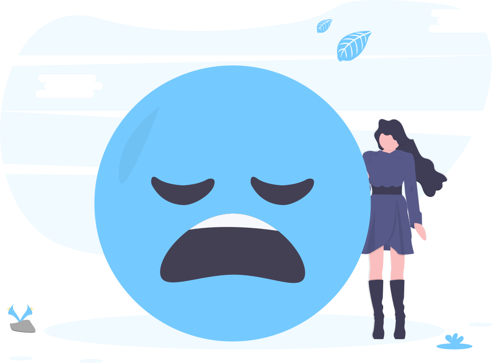
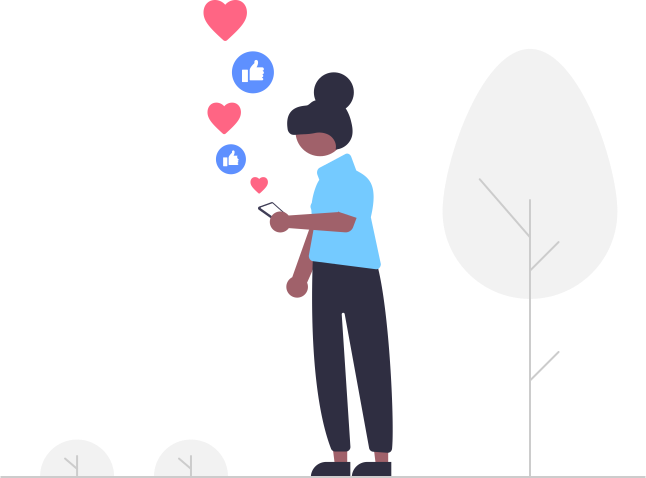

Mindora Blog

Kaygı Nedir? Günlük Hayatı Nasıl Etkiler?
Kaygı hepimizin zaman zaman hissettiği bir duygu. Bazen normaldir, bazen de günlük yaşamı zorlayabilir. Bu yazıda kaygının nedenlerini kısaca ele alıyoruz.
Devamını oku

Telefon Bağımlılığı ve Zihinsel Yorgunluk
Sürekli ekranda olmak fark etmeden zihinsel yorgunluk ve stres yaratır; bu yazı bunun nedenlerini kısaca ele alıyor.
Devamını oku
Sınav Kaygısını Azaltma Yolları
Sınava yaklaşırken artan kaygı normaldir; bu yazı onu azaltmaya yardımcı olacak basit adımları özetliyor.
Devamını oku

Özgüveni Artıran Mikro Alışkanlıklar
Küçük alışkanlıklar, zamanla özgüvende büyük değişimler yaratabilir; bu yazı buna dair basit örnekler sunuyor.
Devamını oku